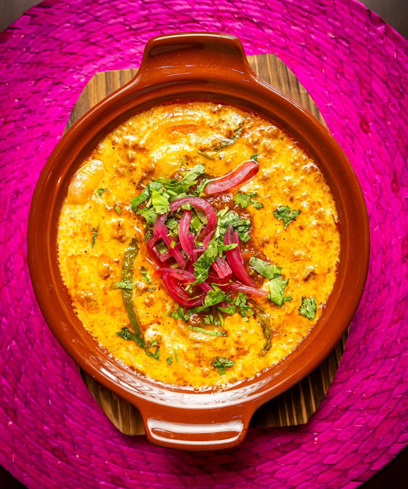
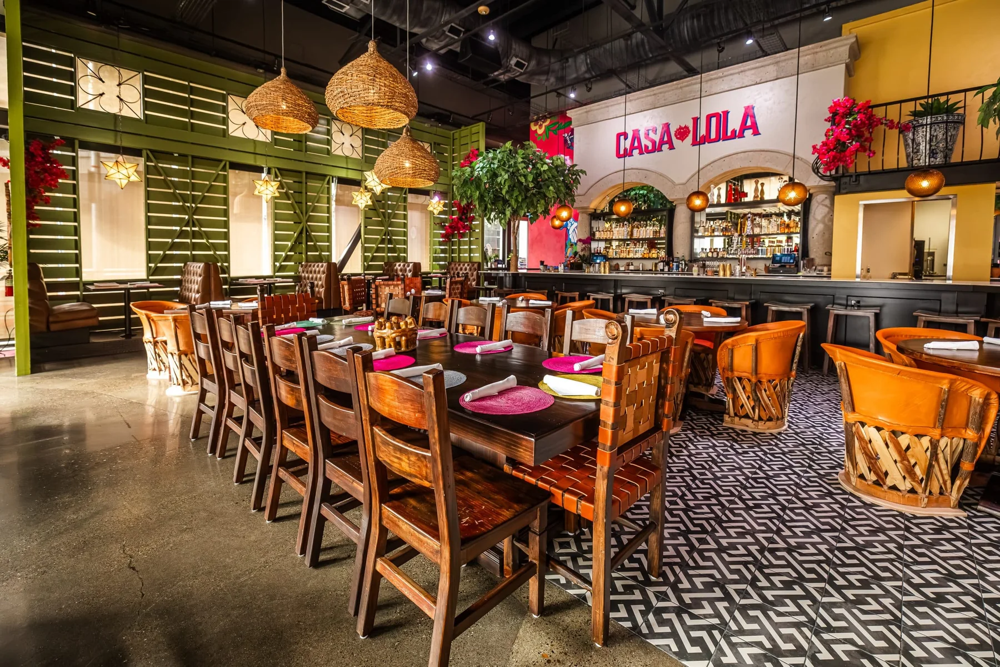
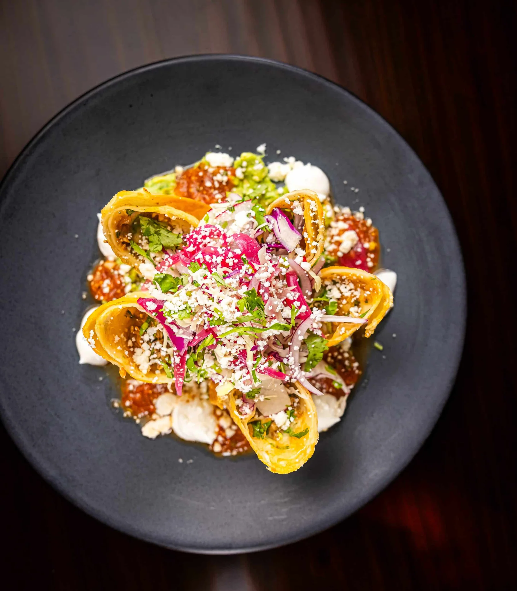
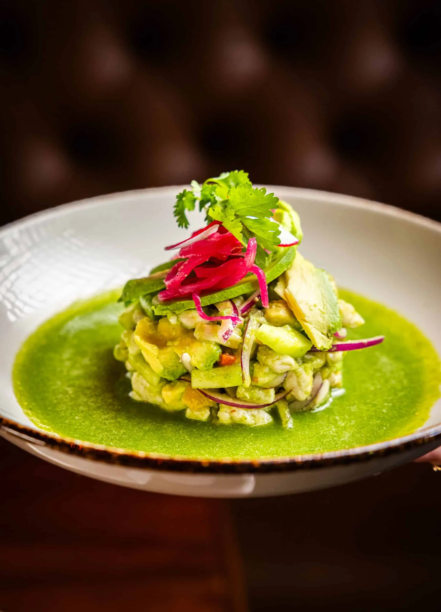
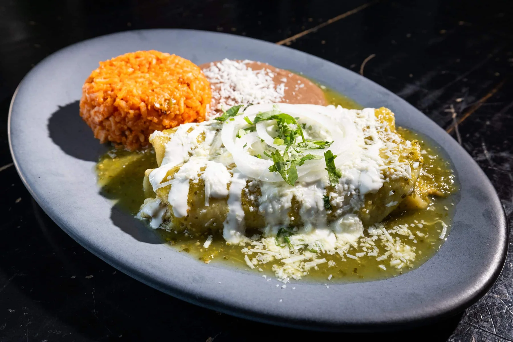
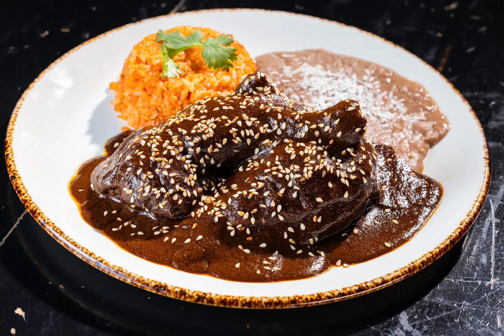

Queso Fundido
Melted Oaxaca and Jack cheeses with house chorizo, green chile and flour tortillas.
See the dinner menuHouse mole, woven lights, and pink napkins. Casa Lola puts a little more color on 16th Street.

Green shutters.
Pink napkins.
House mole.
Casa Lola’s tribute to family and tradition takes shape around the table: roasted chicken in house mole, tequila and mezcal cocktails, and mariachi twice a week.

Melted Oaxaca and Jack cheeses with house chorizo, green chile and flour tortillas.
See the dinner menu
Crisp flour tortilla filled with slow-cooked brisket and Oaxaca cheese, with guacamole and dipping consommé.
See the dinner menu
Bacon-wrapped shrimp with jalapeño and Jack cheese, chipotle crema and cabbage slaw.
See the dinner menu
Catch of the day with avocado, cucumber, jalapeño and tomatillo-lime.
See the dinner menu
Chicken-filled corn tortillas with tomatillo sauce, green chile, cream cheese, queso fresco and crema.
See the dinner menu
Roasted half chicken with house mole, pickled red onion, sesame and corn tortillas.
See the dinner menu
Private events on 16th Street
Under woven lights and bright murals, Casa Lola has space for a private dinner or a much bigger gathering. The events team can help with the room, patio, and menu.
Friday · 6:30–8:30 PM
Sunday · noon–2 PM
Monday–Thursday · 3–6 PM
Not available on show nights. Half-price starters exclude Plato Familiar.Tuesday · 3–6 PM · $5 tacos
Bar seating only. Not available on show nights.| Monday–Thursday | 11:30 AM–9:00 PM |
| Friday | 11:30 AM–11:00 PM |
| Saturday | 10:00 AM–11:00 PM |
| Sunday | 10:00 AM–9:00 PM |
Weekend brunch: Saturday–Sunday 10 AM–3 PM
Parking: Street parking and garages are available around the venue. Arrival details
1132 16th St, Sacramento, CA 95814
Map loads from Google when selected.
Holiday and event hours can change. Call the restaurant for the latest arrival details.